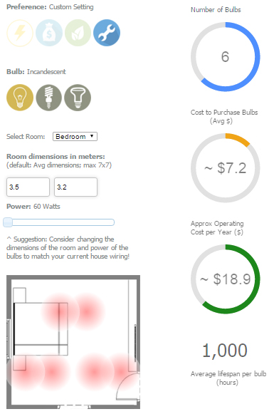
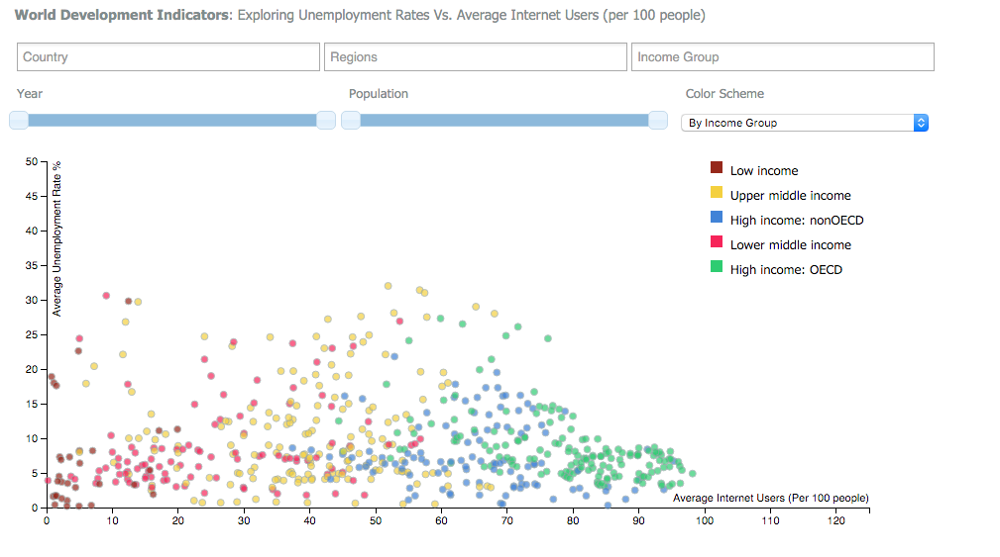

Optimized Lighting Decisions

Created a application in D3.js to help users decide lighting for their homes.
Research done as to how bulb calculation is done by architects.
Conducted a survey to analyze the current understanding of the users for home lighting.
Visualization provides a backdrop into energy consumption in the US and the comparison between the various types of bulbs.
The interactive visualization assists users in either using pre-defined settings or using their parameters to decide the number of bulbs and compare the purchasing and operating cost of the different types of bulbs.
Research details and Project Document
World Development Indicators

Created a visualization in D3, a javascript library, to explore the relationship between World Employment vs Internet usage in various countries.
Data contains statistics from 159 countries over 2010 to 2014.
Captured raw data and cleaned it to make it visualization ready.
Designed multiple filters to narrow down search by Country, Region, Income Group, Year and Population.
Project Document
Exploratory Data Analysis-Murder Statistics
The Tableau story represents how exploratory data analysis has been performed on the murder statistics of 2012 in the United States.
Different tabs on the story explore different dimensions.
Multiple graphs designed in order to explore and visualize the safe and unsafe states with respect to Murder stats.
Refer to the project document below for elaborate explanation with graph interpretation and inference mentioned.
Project Document
Inferences
Most Murders- California.
Most Murders per 100000 people- Washington DC.
Most Murders per Square kilometer- Washington DC.
Safest state- New Hampshire.
Ashes Performance Visualization
The visualization created in Tableau shows how Australia and England players have performed in the historic Ashes Test Series.
Presented data from 1882 to 2015- Entire history of Ashes.
Captured and cleaned data to accommodate requirements.
First graph shows top Batsman performance from both the teams, second shows the team results of all the series and the
third one shows how top Bowlers have performed over the years.
Using Tableau's hover-on feature, user can identify crucial statistics such as average, number of matches played etc.
User can apply custom filters on teams, players and results to view data as required.
Inferences
Results- Australia: 134, England: 99, Drawn: 88.
Top Batsman- Sir Don Bradman for Australia, JB Hobbs for England.
Top Bowler- Shane Warne for Australia, Ian Botham for England.
Antibiotic MIC Visualization Design
The visualization above presents the log MIC value for 3 drugs namely Neomycin, Penicillin and Streptomycin plotted against a list of Bacteria.
The different colors represent the different antibiotics.
The lower the MIC value, the better the performance of the drug against that bacteria.
The positive and the negative gram stained bacteria have been split into 2 columns and represented using different symbols.
Since the range of the values were quite wide, we have taken the log (base 10) of those value to represent them visually.
Multiple bars are presented in order to compare which antibiotics work the best for that particular bacteria.
Looking at the graph, the best antibiotic for a particular bacteria can be determined.